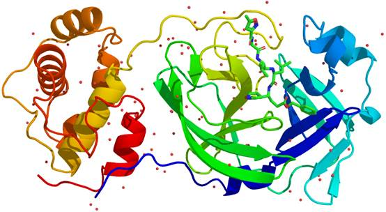
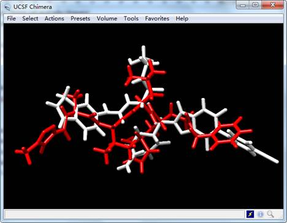

使用MolAICal快速进行从头药物设计
作者：MolAICal （update 2020-07-08）
更多教程（含英文教程）请见如下：
MolAICal官方主页：https://molaical.github.io
MolAICal 文章介绍：https://doi.org/10.1093/bib/bbaa161
MolAICal中文博客： https://molaical.github.io/cnblog/000/000-quickStart.html
MolAICal blogspot： https://qblab.blogspot.com
简介
本教程选择Mpro作为研究实例来介绍MolAICal从头药物设计的功能。Mpro的晶体结构已经被科学家解析出来 (PDB ID: 6LU7, 6Y2F, etc)（如图1所示），具体实例可以参考：https://molaical.github.io/quickstart.html

图1. 蛋白受体Mpro的结构
工具
1. 所需软件下载地址
1) MolAICal: https://molaical.github.io
2) UCSF Chimera: https://www.cgl.ucsf.edu/chimera/
请确保软件的正确安装。
2. 示例文件
软件操作教程中示例文件下载地址如下：
https://github.com/MolAICal/tutorials/tree/master/000-quickStart
操作流程
1. 下载并打开教程文件“InputParFile.dat”文件, 本教程需要对四个参数进行修改，修改内容如下:
------------------------------------------------------------------------------------------
receptorPDB mproNolig.pdb
startFragFile startFrag.mol2
centerPoints -10.733 12.416 68.829
boxLengthXYZ 30.0 30.0 30.0
-------------------------------------------------------------------------------------------
将“receptorPDB” 设置为无配体结合的Mpro结构文件。将“startFragFile”设置为初始片段。“centerPoints”和“boxLengthXYZ” 分别代表盒子中心和长度。
2. 下载并打开教程文件夹“000-quickStart”, 运行如下命令:
#> molaical.exe -denovo grow -i InputParFile.dat
结果
计算结果保存在名为“001-AIGrow/results”的文件夹中。“AstatisticsFile.dat”文件记录了所设计配体的contain ID, Name, Cluster, Affinity, Formula, InChIKey等信息。此文件只是对结果的一个简单演示，不含完整运算结果。完整结果可以在所有运算结束后获得。打开蛋白受体的配体N3晶体结构文件ligand.mol2，及软件生成的配体结构文件lig_11.mol2，如图2所示:

图2. 软件设计的Mpro配体结构（白色）和Mpro抑制剂N3的晶体结构（红色）